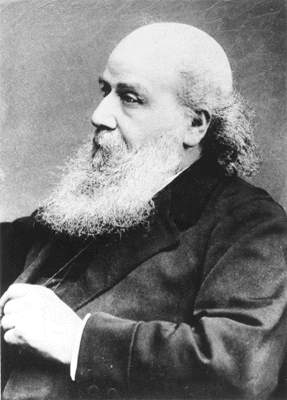

1814–1897
British
Algebra, matrix theory, combinatorics
James Joseph Sylvester was born in London into a Jewish family. He entered St John's College, Cambridge, in 1831 and placed second in the Mathematical Tripos (Second Wrangler) in 1837 — but as a Jew, he was barred from receiving his degree until 1871, when the religious tests were abolished. This exclusion shaped his restless career: he held positions at University College London, the University of Virginia (briefly — he left after a confrontation with a student), the Royal Military Academy at Woolwich, Johns Hopkins University, and finally Oxford.
Sylvester was one of the great terminologists of mathematics. He coined the words "matrix" (1850), "discriminant," "totient" (1879), and "graph" (in its combinatorial sense), among many others. His mathematical partnership with Cayley, which lasted decades, produced the theory of invariants — the study of algebraic expressions unchanged under linear substitutions. Together they developed much of what we now call classical algebra.
Sylvester's law of inertia (1852) is his deepest theoretical contribution: it states that the signature of a quadratic form — the numbers of positive, negative, and zero eigenvalues — is invariant under any change of basis. The result underpins the classification of conics and quadrics, the second derivative test in multivariable calculus, and positive definiteness via Sylvester's criterion (checking leading principal minors). At Johns Hopkins (1876–1883), Sylvester founded the American Journal of Mathematics, the first research mathematics journal in the United States.
| Phase | Page | Referenced for |
|---|---|---|
| Phase 1 | Euler's Totient Function | Coined the term "totient" (1879) |
| Phase 6 | Linear Maps and Rank-Nullity | Rank-nullity theorem attribution |
| Phase 6 | Eigenvalues | Coined terminology for eigenvalue-related concepts |
| Phase 13 | Bilinear Forms | Theory of invariants under congruence transformations |
| Phase 13 | Quadratic Forms | Sylvester's law of inertia: signature is invariant (1852) |
| Phase 13 | Principal Axis Theorem | Sylvester's criterion: positive definiteness via leading principal minors |
| Phase 13 | Principal Axis Theorem | Historical role: introduced the law of inertia and signature |